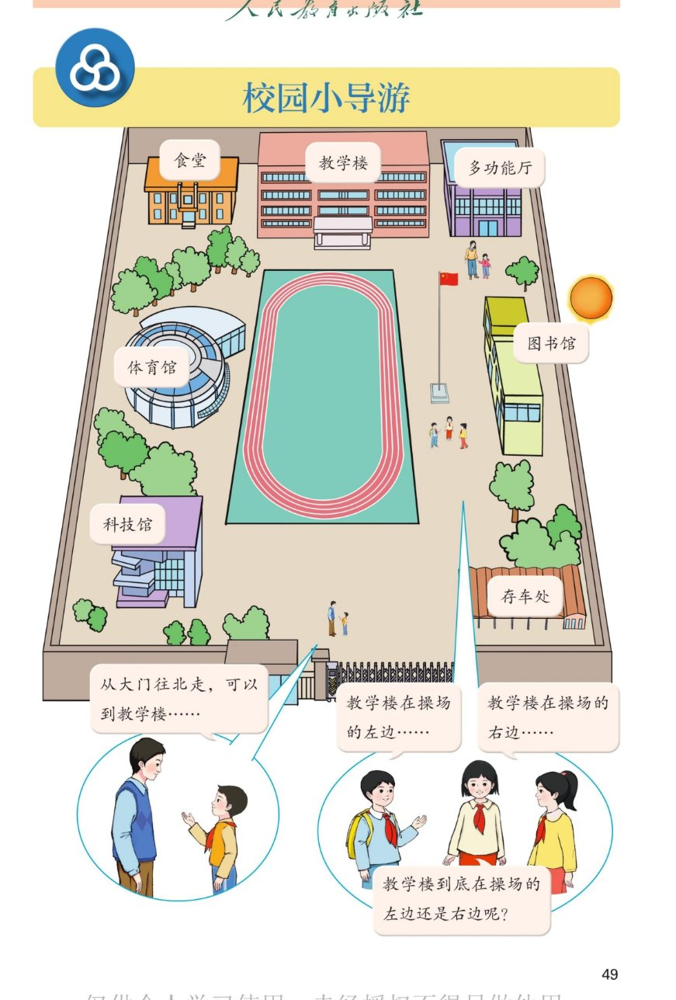

🔊 综合与实践 · 校园小导游 · 课本第 49 页 · 单元页
人教版《数学》二年级上册 · 有声图文带读 · 先想后看解析 · 认识方向从这里出发
题数
6
认知
2
强化
3
拓展
1
本页重点
认识校园平面图 · 描述位置与方向
🎧 分两步学：
① 解析教材图片
——纯声音读图，读到哪一块哪一块闪动提示；关键处先倒计时让你思考，再在图片下方给出解析并朗读。
② 分层提问练习
——六道分层题（认知 / 强化 / 拓展），先思考再展开解析、朗读参考答案；这一步不再回到图片。
也可以随时点任意一句话、图上任意一块单独听；点课本文字卡还会展开答案。
教材图片（点块听读，读到哪块哪块闪）

📖 人教版《数学》二年级上册 · 课本第 49 页 · 图片仅供个人学习，版权归人民教育出版社所有
🤔 想一想（点我可跳过）
课本的文字（点句子：听读 + 看答案）
校园地图
图上有哪些地方？
看答案 ▾
上排：
食堂、教学楼、多功能厅
；
中间：
操场
（红色跑道）、
国旗杆
；两侧：
体育馆、图书馆
；
下排：
科技馆、存车处、大门
。
🌈 先认清这些建筑，才能当好小导游
气泡一
从大门往北走，可以到教学楼
看答案 ▾
大门在校园的
南面
（下方），教学楼在
北面
（上方）；
从大门出来
朝北走
，正好经过操场附近，就能到教学楼。
用"东南西北"来说方向，走到哪里都不会迷路。
气泡二、三
教学楼在操场的左边还是右边？
看答案 ▾
两个小朋友
面对面
站着：一个的左边是另一个的右边；
所以"在左""在右"
都说得对
，只是
面对的方向不同
；
💡 用"东南西北"描述位置，就不会有这种分歧
单元任务
当好小导游要做两件事
看答案 ▾
①
了解学校建筑物的方向
——学会辨认东、南、西、北；
②
设计好导游路线
——用方向把路线说清楚；
接下来的课本会带我们一步步完成这两件事。
分层提问练习（先想后看解析）
🏫
认知
校园平面图上有哪些主要的建筑物？
看解析
🤔 想一想
解析：
食堂、教学楼、多功能厅、图书馆、体育馆、科技馆、操场、国旗杆、存车处、
大门
。
看清图上的建筑，是当好小导游的第一步。
🚪
认知
从大门往北走，可以到哪座楼？
看解析
🤔 想一想
解析：
可以到
教学楼
。
大门在南面、教学楼在北面，
往北走
正对教学楼。
⚖️
强化
"教学楼在操场左边"和"在操场右边"，谁说得对？
看解析
🤔 想一想
解析：
都说得对
；
两人
面对面
站着，左右正好
相反
，所以说法不同都对。
💡 左右会随面对方向变化，东南西北不会变
🧭
强化
要当好校园小导游，需要做哪些准备？
看解析
🤔 想一想
解析：
① 了解学校
建筑物的方向
（东、南、西、北）；
②
设计好导游路线
，把"先到哪、再到哪、往哪走"说清楚。
🔄
强化
为什么用"左右"说位置容易弄错？
看解析
🤔 想一想
解析：
"左右"会跟着人
面对的方向
变：转过身，左右就反过来了；
东南西北
是固定不变的，谁来描述都一样。
💡 所以本单元要学用"东南西北"来说方向
🌈
拓展
试着用"东南西北"介绍校园里一个建筑物位置。
看解析
🤔 想一想
解析：
示例：
教学楼在操场的北面
；
大门在校园的南面
；
还可以说：食堂在校园的西北角，图书馆在校园的东面。
🌈 用固定的方向说位置，谁听都不会错
① 解析教材图片
② 分层提问练习
⏹ 停止
纯声音 + 高亮跟随 · 想好才出解析
← 返回导航